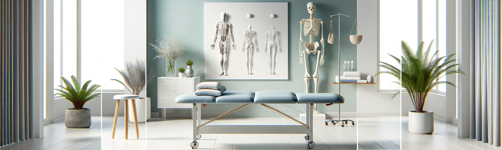
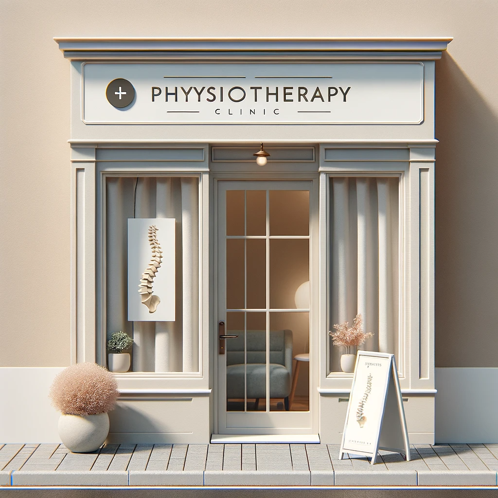
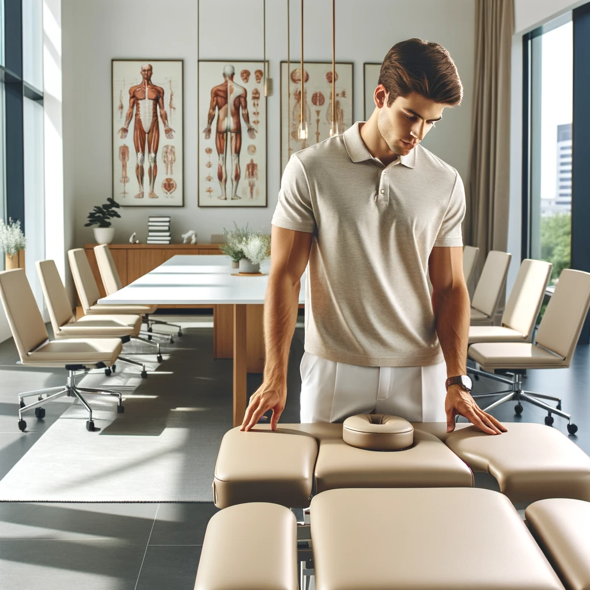

Jedną z kluczowych cech mojej praktyki jest elastyczność i indywidualne podejście do potrzeb każdego klienta. Rozumiem, że nie każdy jest w stanie dojechać do mojego gabinetu, dlatego oferuję także wizyty domowe. To wygodne rozwiązanie pozwala mi dostarczyć profesjonalną opiekę fizjoterapeutyczną bezpośrednio w domowym zaciszu moich pacjentów. Dzięki temu mogę lepiej zrozumieć ich codzienne wyzwania i dostosować terapię do ich osobistego środowiska, co często przekłada się na szybszą i bardziej efektywną rekonwalescencję.
Poza wizytami domowymi, serdecznie zapraszam pacjentów do mojego profesjonalnie wyposażonego gabinetu, gdzie mogą skorzystać z pełnego zakresu usług fizjoterapeutycznych. Gabinet zaprojektowałem tak, by zapewnić maksymalny komfort i spokój, co jest niezbędne dla skutecznej terapii. Wykorzystuję tu najnowsze techniki i sprzęt, co pozwala mi na dokładną diagnostykę i efektywne leczenie. Dbam o to, aby każda wizyta była nie tylko lecznicza, ale i relaksująca, a moje indywidualne podejście do każdego pacjenta sprzyja szybszemu powrotowi do zdrowia i dobrej kondycji fizycznej.


W ramach mojej oferty fizjoterapeutycznej stawiam również na współpracę z firmami, które pragną dbać o zdrowie i dobre samopoczucie swoich pracowników. Oferuję kompleksowe programy profilaktyczne i interwencyjne, które są dopasowane do specyfiki danej branży i indywidualnych potrzeb zespołu. Sesje terapeutyczne w miejscu pracy pomagają w znacznym stopniu zredukować ryzyko urazów związanych z przeciążeniem, a także przyczyniają się do wzrostu efektywności i zadowolenia pracowników. Zajęcia mogą obejmować ergonomię stanowiska pracy, ćwiczenia wzmacniające, techniki relaksacyjne oraz edukację o zdrowym stylu życia, co wszystko składa się na długofalową inwestycję w kapitał ludzki każdej przedsiębiorczej organizacji.
Moja oferta obejmuje również edukacyjne sesje w szkołach, które mają na celu wzbogacenie programu nauczania o praktyczną wiedzę na temat fizjoterapii i anatomii ludzkiego ciała. Prowadzę interaktywne warsztaty i prelekcje, które zachęcają uczniów do zdrowego stylu życia, pokazują jak unikać urazów podczas aktywności fizycznej oraz jak prawidłowo dbać o swoje ciało. Poprzez zrozumienie podstaw anatomii i biomechaniki, młodzi ludzie mogą nauczyć się jak cenne jest ich zdrowie i jak ważne są codzienne nawyki w zapobieganiu przyszłym problemom z układem ruchu.
| Usługa |
Cena |
Czas trwania |
Miejsce wykonania |
| Konsultacja fizjoterapeutyczna |
150 zł |
1 godzina |
Gabinet |
| Terapia manualna |
200 zł |
1 godzina |
Gabinet lub u klienta |
| Masaż leczniczy |
180 zł |
1 godzina |
Gabinet |
| Rehabilitacja po urazach |
220 zł |
1.5 godziny |
Gabinet lub u klienta |
| Ćwiczenia korekcyjne |
160 zł |
1 godzina |
Gabinet |
| Edukacja ergonomii pracy |
300 zł |
2 godziny |
U klienta (dla firm) |